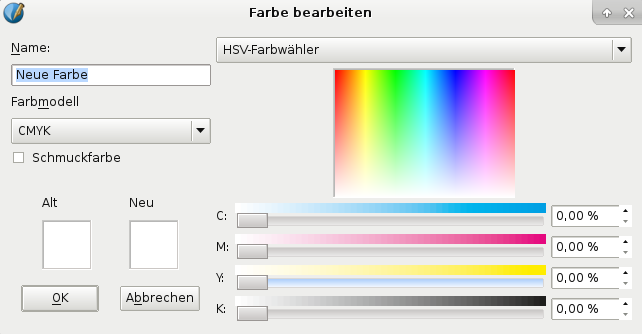
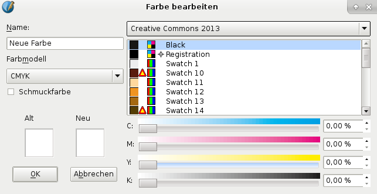
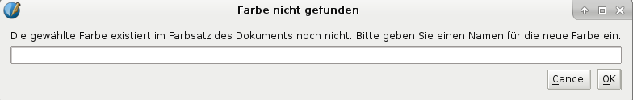
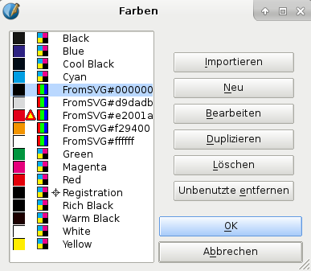

Hier nehmen wir wieder den Farben-Dialog, den wir im letzten Kapitel hatten (mit Bearbeiten > Farben). Klicken Sie den Button Neu, und Sie sehen den Dialog Farbe bearbeiten. Vergeben Sie einen aussagekräftigen Namen und stellen Sie mit den Schiebereglern Farbe und Sättigung ein. Sie können auch überall in den Regenbogen klicken, um rasch eine Annäherung an die Farbe zu erreichen, die Sie einstellen wollen. Klicken Sie OK um die neue Farbe zu Ihrer Palette hinzuzufügen. Beachten Sie, daß mit dieser Methode Ihre Farbpalette nur in diesem Dokument zur Verfügung steht – weiter unten wird beschrieben, wie man eine Palette eines gespeicherten Dokuments importiert.
Sie haben 3 Farbmodelle, die Sie auswählen können: RGB, CMYK und Webfarben. Die letzte Auswahl limitiert die Farbwerte auf die, die in Farbräumen mit 8 und 16 Bit gleich dargestellt werden.
|
|
 |
Wenn man den Button oben rechts im Dialog Farbe bearbeiten anklickt, erscheint eine lange Auswahlliste, die alle Farbpaletten enthält, die in Scribus verfügbar sind. Wenn man nun eine dieser Farben anklickt, werden Name und RGB/CMYK-Werte als neue Farbe übernommen. Viele dieser Farbsätze enthalten proprietäre Schmuckfarben. |
|  |
Die kleine Pipette in der Toolbar aktiviert den Farbwähler, der durch einen Klick auf einen Punkt des Bildschirms diese Farbe auswählt. Wenn diese Farbe noch nicht in der Farbpalette vorhanden ist, erscheint ein Dialog, der Sie auffordert, dieser Farbe einen Namen zu geben. Wenn Sie keinen Namen vergeben, wird die Farbe nicht hinzugefügt, selbst wenn Sie OK klicken.

Dazu wählen Sie im Farben-Dialog die Farbe, die Sie abändern möchten, und wählen Duplizieren. Es erscheint der Dialog Farbe bearbeiten. Hier können Sie dann die gewünschten Werte einstellen und einen Namen vergeben.
Dies kann man einzeln indem man eine Farbe auswählt und Löschen drückt, oder man kann – falls man sich entschlossen hat, die Anzahl der Farben auf der Liste zu verringern – durch einen Klick auf Unbenutzte entfernen alle Farben löschen, die aktuell nicht in diesem Dokument verwendet werden.
Wenn man mit einem früher gespeicherten Dokument arbeitet, übernimmt man dessen Farbsatz. edenkt man dies, kann man dieses Dokument öffnen, den Inhalt löschen und es mit Datei > Speichern unter unter einem neuen Namen speichern.
Speziell wenn man eine angepaßte Farbpalette hat, kann man also auch ein leeres Dokument erstellen, das man mit "farbschema3.sla" oder einem anderen aussagekräftigen Namen benennt, um es später wieder zu finden.
Man kann auch eine Seite eines anderen Dokuments importieren, wobei dessen Farben auch importiert werden.Wenn man eine Datei aus der Bibliothek importiert, werden die Farben zum Dokument hinzugefügt. Ebenso fügen Vektorgrafiken (SVG, EPS usw.) die Farben zum Dokument hinzu, die sie enthalten.
|  |
In diesem Beispiel – wir haben ein SVG importiert – betrachten wir den Farbendialog (Bearbeiten > Farben), damit wir einige Details genauer beleuchten können. Wir haben mit dem Scribus-Basic-Farbsatz begonnen und eine SVG-Grafik importiert. Diese hat die Farben hinzugefügt, die mit FromSVG anfangen. Scribus fragt nicht nach einem OK, es entsteht eine Grafik mit vielen Farben. Falls man nur die Farben einer Vektorgrafik (EPS und Varianten, PS) oder kompatibler Palettendateien [AI (Adobe Illustrator) GPL (Gimp Farbpalette), SOC (OpenDocument Farbpalette) oder einer kompatibel formatierten Scribus-XML-Ausführung] importieren will, kann man das auch machen, indem man Importieren im Farben-Dialog auswählt. |
Man beachte die vielen Schwarz, alle sind verschieden. Unser neu hinzugefügtes Schwarz, FromSVG#000000 ist ein RGB Schwarz, alle anderen sind CMYK. Wenn man den Mauszeiger über die Farben zieht, sieht man den Unterschied.
| C% | M% | Y% | K% | |
| Black | 0 | 0 | 0 | 100 |
| Cool Black | 60 | 0 | 0 | 100 |
| Registration | 100 | 100 | 100 | 100 |
| Rich Black | 60 | 40 | 40 | 100 |
| Warm Black | 0 | 60 | 30 | 100 |